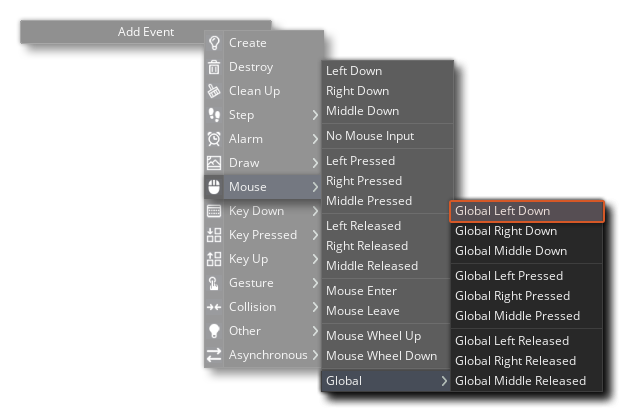
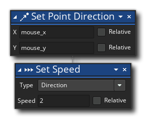
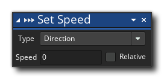
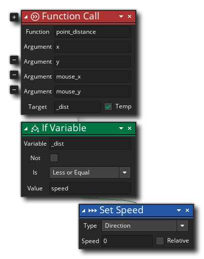
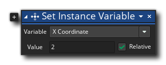
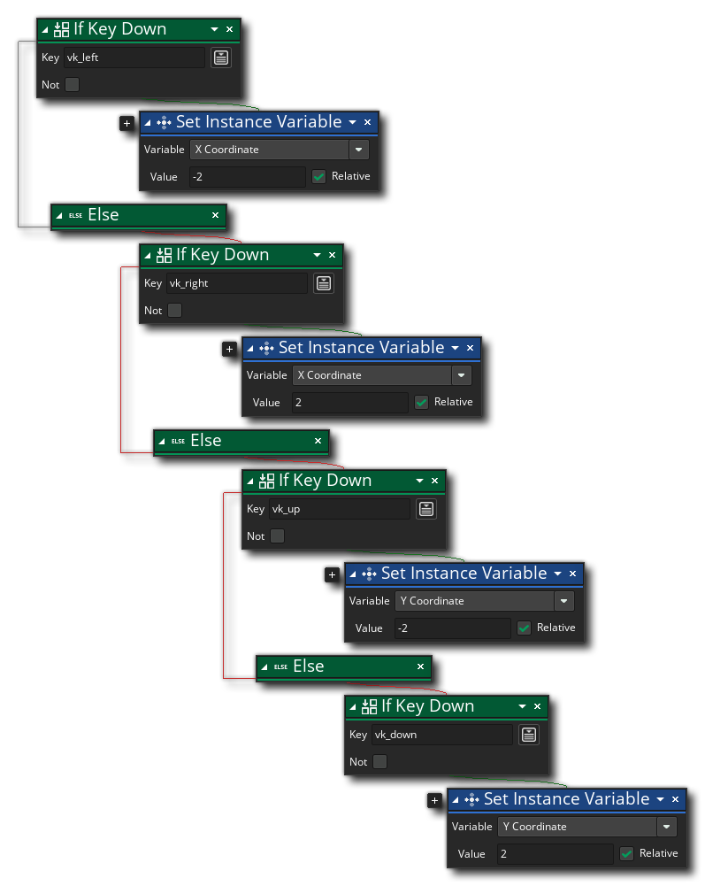
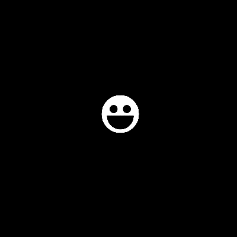
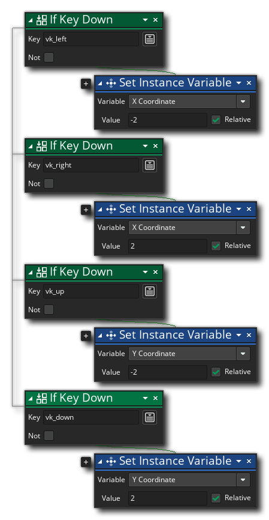
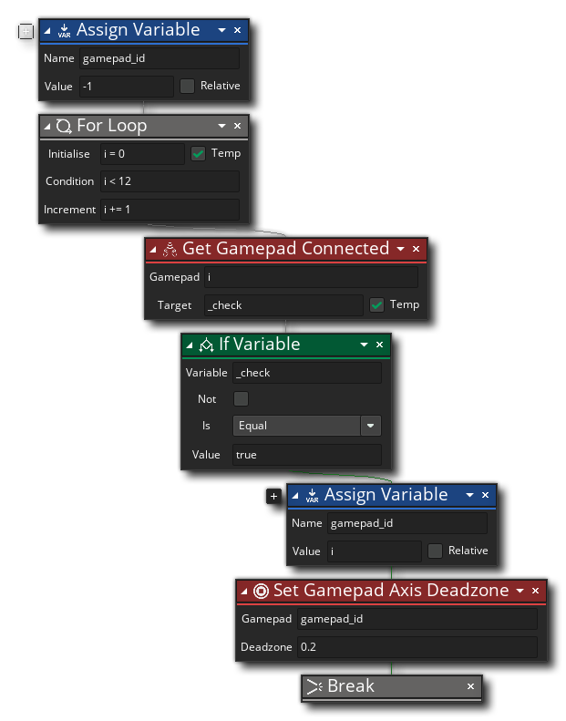

运动和控制
本快速入门指南的上一节给出了一些在屏幕上画东西的例子，但如果你不能移动它们，仅仅画东西是没有什么用的......所以在这一节中，我们将为你提供一些移动的例子，objects ，以及一些不同类型游戏的基本控制方案。所有的例子都是用GML 视觉以及GML 代码给出的，所以你可以使用你觉得更合适的方式。请注意，我们不会在这里进行太深入的解释，因为我们希望你能尽快开始制作东西，所以我们鼓励你在使用过程中探索任何链接，并使用手册中的 "搜索 "功能来寻找你不确定的其他信息。
在进行任何进一步的工作之前，你可能想从 "开始页"中创建一个新的项目（GML 或GML Visual），并添加（或创建）一些sprites 以及一两个object - 因为我们将给你一些代码，你可以使用这些代码进行测试 - 并确保该项目有一个room 来放置实例。不要太担心你做的sprites 是什么样子的，因为即使是一个简单的白色方块也可以，一旦你准备好了一切，你就可以开始处理下面列出的例子。
朝着鼠标的方向移动
让object 移动并与玩家互动的最简单方法之一是使用鼠标，在这个例子中，我们将向你展示如何使用一些基本的代码来让object 向用户点击了鼠标左键的地方移动 。
。
首先，打开一个object ，给它分配一个sprite ，然后给它一个全局鼠标左键下移事件。
我们使用全局 鼠标事件，因为它们可以检测到room ，而普通的鼠标事件只有在鼠标实际在实例边界框内点击的情况下才会检测到点击。在这个事件中，我们要添加这些动作或代码。

move_towards_point(mouse_x, mouse_y, 2);
这里我们要告诉实例向屏幕上的某个位置移动，在这里是 "mouse_x" 和 "mouse_y" 的位置（"mouse_x" 和 "mouse_y" 是内置 ，总是保持当前鼠标光标的位置）。GML Visual通过设置 "direction" 和 " speed" 来实现这一目标。 实例变量来实现，而GML 则使用函数 move_towards_point()(这也设置了 speed 和 direction 变量，只是在一个单一的、易于使用的函数中）。
将这个object 的一个实例放在一个room ，然后点击播放按钮 ，然后点击
，然后点击 周围的room ，使这个实例向鼠标移动。
周围的room ，使这个实例向鼠标移动。
 很好!object 的实例现在向你点击的地方移动，如果你按住按钮，实例就会一直跟着鼠标指针移动。然而，有一个问题...在你点击一次并释放后，实例将继续移动，并最终离开room!我们有很多方法可以解决这个问题，你选择哪种方法取决于你想做什么，但现在最简单的解决方法是简单地添加一个全局鼠标按钮释放事件，所以现在添加到object ，并给它这样的代码。
很好!object 的实例现在向你点击的地方移动，如果你按住按钮，实例就会一直跟着鼠标指针移动。然而，有一个问题...在你点击一次并释放后，实例将继续移动，并最终离开room!我们有很多方法可以解决这个问题，你选择哪种方法取决于你想做什么，但现在最简单的解决方法是简单地添加一个全局鼠标按钮释放事件，所以现在添加到object ，并给它这样的代码。

speed = 0;
有了这个方法，只要按住鼠标按钮，实例就会跟随鼠标光标移动，而当你松开按钮时，它就会停止移动。按播放键 ，现在就可以测试了。
，现在就可以测试了。
在我们离开这个例子之前，有一个最后的问题需要解决......如果你点击并按住 鼠标按钮，但不移动光标，那么实例就会向光标移动，然后围绕光标 "振动"。这是因为实例每次移动的速度超过了1个像素，所以 "过冲 "了位置，然后试图向后移动，然后又过冲，等等......（如果不是很明显的话，把移动速度设为5或类似的速度，就可以看到这个问题）。
 为了解决这个问题，我们需要用这段代码在object ，添加一个步骤事件。
为了解决这个问题，我们需要用这段代码在object ，添加一个步骤事件。

var _dist = point_distance(x, y, mouse_x, mouse_y);
if (_dist <= speed)
{
speed = 0;
}
在这里，我们只是检查实例到鼠标位置的距离，如果它与当前速度相同或小于当前速度，我们就将速度设置为0。这使得实例在足够接近鼠标位置时停止，而且我们不会出现那种讨厌的 "振动 "问题。
键盘的4向和8向运动
就在本指南的开头，我们向你展示了以下动作和代码，以使一个实例在每个游戏步骤中向右移动两个像素。
x = x + 2;
这种类型的移动被称为位置 移动，因为我们基本上是在每次运行代码时将实例拿起并在一个新的位置上再次放置。在这个例子中，我们要做的是向你展示如何使用这种类型的运动来在四个方向上移动一个实例：上、下、左、右。
首先，打开一个object ，并给它分配一个sprite 。现在，我们可以在这一点上添加各种键盘事件，并在每一个事件中让实例向所需的方向移动，然而，我们只希望玩家能够一次向一个方向移动，而且只用键盘事件来做这件事比用代码做这件事要复杂一些。取而代之的是，我们将使用Step事件--你现在应该把它添加到object --用以下动作或代码来使用箭头键移动。
if keyboard_check(vk_left)
{
x = x - 2;
}
else if (keyboard_check(vk_right))
{
x = x + 2;
}
else if (keyboard_check(vk_up))
{
y = y - 2;
}
else if (keyboard_check(vk_down))
{
y = y + 2;
}
我们使用 " if... else if... else if..." 结构来确保实例每次只向一个方向移动，因此实例应该只能向上、向下、向左或向右移动，但不能向对角线移动。将一个object 的实例放在一个room ，然后按下播放按钮  ，现在就可以进行测试了!如果一切正常，你应该有这样的东西。
，现在就可以进行测试了!如果一切正常，你应该有这样的东西。

我们也可以很容易地修改这段代码，将4向运动转换为8向运动......只需从代码块中删除 " else" 命令，这样一切就看起来像这样。
if keyboard_check(vk_left)
{
x = x - 2;
}
if (keyboard_check(vk_right))
{
x = x + 2;
}
if (keyboard_check(vk_up))
{
y = y - 2;
}
if (keyboard_check(vk_down))
{
y = y + 2;
}
现在，当你按下播放按钮 时， ，它会看起来像这样。
，它会看起来像这样。
最后一件事值得用GML 编码的用户注意 ...当使用GML Visual时，你可以从一个下拉列表中选择你想使用的键盘键，但使用GML ，就没有那么简单了。有一些你可以使用的键盘常量--比如上面代码中显示的方向键常量--但没有 字母数字键的常量。这些处理方式略有不同，需要你使用函数 ord().下面的代码显示了如何使用WASD而不是方向键来工作。
if keyboard_check(ord("A"))
{
x = x - 2;
}
if (keyboard_check(ord("D")))
{
x = x + 2;
}
if (keyboard_check(ord("W")))
{
y = y - 2;
}
if (keyboard_check(ord("S")))
{
y = y + 2;
}
游戏手柄运动
我们已经介绍了鼠标的移动和键盘的移动，所以这意味着现在是介绍游戏 手柄移动的时候了。现在，我们不会讨论D-pad，因为它的工作原理与使用键盘一样（只需将上述例子中的键盘功能改为 gamepad_button_check()或If Gamepad button Down），所以在这个例子中，我们将讨论使用模拟摇杆进行移动。
首先，我们需要检测正在使用的游戏板。游戏板被赋予一个从0到11的ID值，所以我们将使用" for"loop 来检测任何连接的游戏板的ID，并将这个ID值存储在一个变量中供将来使用。由于我们只想设置检测第一个连接的游戏板，而不是所有的游戏板，我们将在检测到一个游戏板后使用 " break" 命令，以便它 "打破 "loop （例如，如果连接的第一个游戏板的ID是4，那么loop 将只运行5次，检查ID值0-4，然后在遇到游戏板时打破loop ）。因此，制作（或打开）一个object ，给它分配一个sprite ，然后添加一个创建事件，内容如下。

gamepad_id = -1;
for (var i = 0; i < 12; i += 1;)
{
if gamepad_is_connected(i)
{
gamepad_id = i;
gamepad_set_axis_deadzone(gamepad_id, 0.2);
break;
}
}
请注意，在上面的代码中，我们将 死区 为游戏板设置了死区。这是因为不同品牌的游戏板上的模拟杆会有不同的敏感度，有时它们会非常敏感，如果你不设置死区，那么它们会在你的游戏中引起不必要的运动。所以我们把死区设置为一个类似0.2的值，告诉GameMaker忽略任何低于这个绝对值的游戏手柄数值。
为了添加实际的运动，我们需要一个步骤事件，所以现在就添加它，并给它添加以下GML Visual或GML。

if gamepad_id > -1
{
var _h = gamepad_axis_value(gamepads[0], gp_axislh);
var _v = gamepad_axis_value(gamepads[0], gp_axislv);
x += _h * 4;
y += _v * 4;
}
这里我们要检查左 摇杆的水平或垂直运动。轴函数返回一个介于-1和1之间的值，所以对于横轴来说，-1是左，0是不动，1是右，而对于纵轴来说，-1是向上，0是不动，1是向下。还要注意的是，这些值在-1和1之间 ，所以--例如--横轴可以返回一个0.5的值，意味着杆子在 "休息 "位置和完全推到右边之间的一半。出于这个原因，我们再把这个值乘以4（你可以乘以任何数值，这取决于你希望实例移动的速度）--这意味着实例的速度将取决于在杆轴上做了多少运动。
object 将这个room ，并按下播放按钮 。  然后用你连接的游戏手柄的左摇杆来回移动。你应该看到像这样的东西。
然后用你连接的游戏手柄的左摇杆来回移动。你应该看到像这样的东西。

先进的8向运动
在这最后一个例子中，我们将重新审视我们的8向运动代码，并解决它的一个问题，即对角线运动实际上比上/下/左/右运动要快。这只是因为在对角线上移动时，你是沿着由x/y移动值创建的直角三角形的斜边移动。
为了更清楚地说明发生了什么，让我们去掉所有的文字和sprites ，简单地显示同一运动线旋转45°，使其成为水平的。

正如你所看到的，差异是非常明显的，如果实例每一步移动超过1或2个像素，那么就会变得非常明显，对角线的移动要快得多 !那么，我们如何限制这种情况呢？有很多方法可以做到这一点，但我们将专注于其中的一个，因为它引入了几个函数和概念，对你以后的游戏会很有用。
为了处理这个问题，我们必须把独立按下的键的输入值存储在中，然后检查它们，并根据按下的键的组合来移动。因此，为此你需要一个object ，并分配一个sprite ，你需要给它一个带有以下动作或代码的步骤事件。

注意我们将上面的视觉动作分成两列，以使它更容易被视觉化，但在视觉编辑器中，它将被连续放置。
var _left = keyboard_check(vk_left);
var _right = keyboard_check(vk_right);
var _up = keyboard_check(vk_up);
var _down = keyboard_check(vk_down);
var _hspd = _right - _left;
var _vspd = _down - _up;
我们还需要添加一些代码来实际移动，但在这之前，我们先解释一下。我们想把左/右/上/下转换为等效的水平和垂直速度值，所以要做到这一点，我们要得到每个键的值，然后对它进行一些基本的数学运算，以得到速度值。这是因为如果一个键被按下，那么检查动作或函数将返回 "1"，如果它没有 被按下，那么函数将返回0。所以，如果--例如--右键被按下，你的 " _hspd"是 "1-0=1"，如果左键被按下，你的 " _hspd"是 "0-1=-1"（如果它们都被按下，那么就是 "1-1=0"，所以实例不会移动）。记住，在GameMaker room 中，要向右移动，我们要加到 x 的位置，要向左移动，我们要减去，所以这段代码会给我们一个正值或负值，我们可以根据键盘输入的情况，加或减去水平或垂直移动。
现在我们可以添加实际移动实例的代码，所以--仍然在步骤事件中，在上述代码之后--添加这个。
if (_hspd != 0 || _vspd != 0)
{
var _spd = 4;
var _dir = point_direction(0, 0, _hspd, _vspd);
var _xadd = lengthdir_x(_spd, _dir);
var _yadd = lengthdir_y(_spd, _dir);
x = x + _xadd;
y = y + _yadd;
}
上面的代码首先检查两个中的一个是否为真，即：如果水平或垂直速度变量不是0。注意 " if"GML 检查如何使用符号 " ||" 。这在编程时意味着 " or"，所以--用普通语言来说--你在检查
if the variable _hspd does not equal zero
or
if the variable _vspd does not equal zero
string 你可以通过这种方式在 " if" 检查中把多个表达式放在一起，这些表达式有多种不同的评估方式（更多信息请见这里的 表达式部分）。
下一节代码在一个变量中存储了一个实际运动速度的值，然后使用 _hspd 和 _vspd 的值获得一个方向，这些值可以是-1、0或1。方向函数从（0，0）开始检查，因为我们没有使用room 坐标，相反，我们希望它根据变量值评估为一个从0°到360°的方向。下图说明了正在发生的事情，比试图用语言来解释要好。
注意 GameMaker中的方向是逆时针计算的，所以0°和360°是向右，90°是向上，180°是向右，270°是向下。
最后，我们用 lengthdir_x()和 lengthdir_y()函数来实际移动该变量。这些是 向量 函数，它获取一个长度（距离）和一个方向，然后根据这些值计算出给定轴上的新位置（更深入的解释见函数描述）。
这有很多东西需要一下子接受，如果你不太明白，也不要担心！你会慢慢明白的。你会慢慢明白的!现在要做的就是将这个object 的实例添加到一个room ，然后按下播放按钮 。  ，你就会得到如丝般顺滑的8向运动，而不会出现任何与对角线移动有关的问题。
，你就会得到如丝般顺滑的8向运动，而不会出现任何与对角线移动有关的问题。

通过这些例子--以及之前的绘图例子--我们希望你已经有了足够的了解，可以开始制作你自己的项目了本快速入门指南的最后一页包含了对你所学到的一些东西的总结，以及其他学习材料的链接。